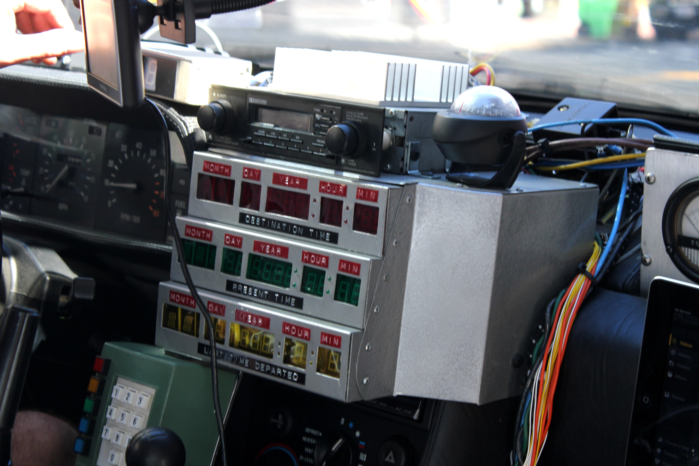
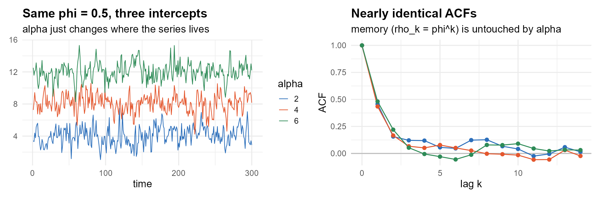
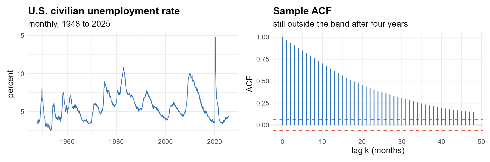
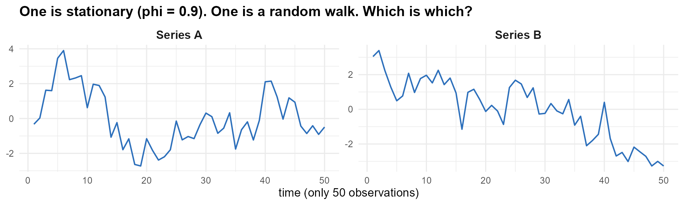
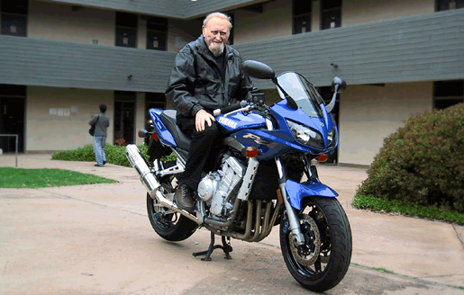
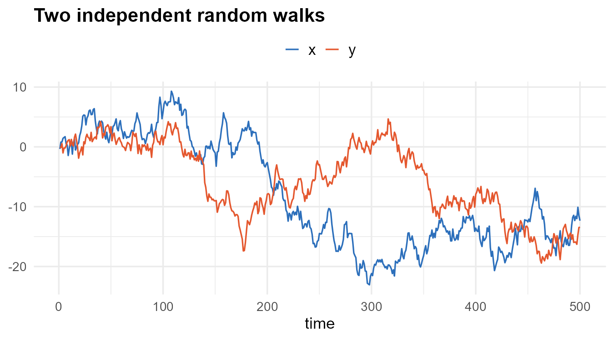
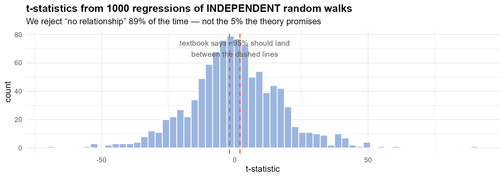

Back to the … Time Series?
Module 1 · Memory, Stationarity, and the Ghost of Spurious Regression
Gary Cornwall
Econ 6376 · The George Washington University
Act I · What makes time series different
Time series is a different animal
A cross-section is a crowd photographed once. A time series is one subject, photographed again and again, where order is everything.
- Marty goes back to 1955 and shifts one punch in a parking lot — and his entire present rewrites itself.
- Shuffle a cross-section: nothing lost. Shuffle a time series: the story is gone.
- The central question of the course: how much memory does a series carry?
- Everything downstream is just: how much? how do we measure it? what do we do about it?

Past · present · future of a single process — one dashboard.
Three shapes of data
Cross-section One snapshot, many subjects. Order doesn’t matter — shuffle the rows and nothing is lost.
Time series One subject, many snapshots. Order is everything. That dependence is the course.
Panel / longitudinal Many subjects through time:
- Pooled cross-section — ignore time.
- Repeated cross-section — new people each period, time matters.
- Panel — the same people tracked over time.
We live in the middle column — but the machinery travels: a panel is time series stacked across subjects.
You never have enough time
Cross-section asymptotics lean on . Time series leans on — and time is stingy.
- People on Earth: . Stars in view: .
- Quarterly US GDP since 1947: observations.
- The universe is only years old.
. . .
So our estimators must work in short, dependent samples. That constraint shapes every choice in this course.
Depending on what you measure, you may need A LOT of data before the asymptotics kick in.
The master equation — one mixing board
Every model in this course is this one equation with some faders pushed to zero. Lecture by lecture we raise new channels.
Today only three faders are up:

| Model | Channels live |
|---|---|
| White noise | |
| AR(1) — today | |
| ARMA(p,q) | M3–M5 |
Two equations, never confuse them
The DGP — the truth (unobserved):
- Parameters unhatted: .
- — the innovation. The genuine surprise.
Your model — estimated (observed):
- Parameters hatted: .
- — the residual. What’s left over.
If your model is right, the residual behaves like the innovation . When it doesn’t, your model is wrong. Every diagnostic in this course is that one sentence.
Act II · Memory, made literal
Turn off everything but the memory
- is the star — how much of yesterday survives into today.
- is the series looking back at itself.
- is something genuinely new — a shock.
How much does the past remember?
There’s φ — now feel it.
The grey dashed line is the same shocks with no memory (φ = 0) — the raw surprises. Drag φ toward 0 and the blue line collapses onto it; toward 1 and it pulls away, leaning back only slowly after each surprise. Same shocks — only the memory changes, and that lag is the forgetting.
Four regimes of memory
- — no memory. Today owes nothing to yesterday. White noise.
- — fading memory. The past matters, but its grip decays.
- — perfect memory. Every shock remembered forever.
- — explosive. Rare in economics; set aside.
A random walk () is Sheldon: eidetic memory, every embarrassment kept forever. A stationary series is the rest of us — vivid now, faded by next month.
The for-loop is the equation
Each point is assembled the same way: take φ of where you were (blue ring), add a fresh shock (orange), land at . The bars are the two contributions. Step +1 to build it one period at a time.
… which is exactly this R code
- The loop line is the equation. No translation.
- Burn-in: throw away the first 100 — let the process forget its arbitrary start and settle into its stationary distribution.
Production code uses arima.sim(); we hand-build the loop once, to feel the DGP in our fingers.
Two operators you’ll see every week
Lag operator — shift back one period:
Rewrite the AR(1):
Stationarity will live in the roots of that polynomial. Course convention: (minus signs) — flag it if you read Enders/Hamilton.
Difference operator :
- Shows up everywhere: differencing for stationarity, returns, ECMs.
- It’s just in disguise.
The lag operator, in code: embed()
The lag operator is math. embed() is its R twin — it stacks a series beside its own lags.
- Row 1 is — the present laid beside its own past.
- You lose the first rows: you can’t form a lag you don’t have yet.
- That block is the design matrix for an AR regression — regress column 1 on the rest.
Act III · The limits of memory
Stationarity: the rules don’t change
A series is weakly stationary when:
- for all (constant mean)
- for all (constant variance)
- — depends on the gap , not on when (stable autocovariance)
Stationarity doesn’t mean the series sits still. It means the rules governing its movement don’t change over time. That’s what makes the past a usable guide to the future.
Strict vs. weak — which rules hold still?
Strict stationarity Every finite-dimensional joint distribution is unchanged by a common time shift — the entire distribution is frozen in time, every moment, every joint shape.
Weak (covariance) stationarity
Only the first two moments must hold still: constant mean, constant variance, and autocovariance that depends on the gap, not the date.
Strict weak, but weak strict. We work with weak stationarity throughout — it’s exactly what our estimators and tests actually require.
What φ buys you — and where it breaks
When :
Both are constants — no . Conditions 1 and 2 hold.
Socratic: what happens to that variance as ?
→ the variance blows up. isn’t a convenience — it is the boundary of stationarity.
The autocorrelation function — memory you can plot
Autocovariance is covariance of a series with its own past:
For a stationary AR(1) this collapses to something beautiful:
| memory | |||||
|---|---|---|---|---|---|
| 0.5 | .50 | .25 | .13 | .001 | short |
| 0.9 | .90 | .81 | .73 | .35 | long |
| 1.0 | 1 | 1 | 1 | 1 | never decays |
Watch the memory decay
Each bar is . Drag φ: toward 0 the memory collapses in a step or two; toward 1 the bars refuse to fall — the slow-decay fingerprint of a unit root (bars flip orange when , the tell-tale oscillation).
The intercept moves the level, not the memory

Three series, same , three different . They live at different heights — yet their ACFs land right on top of each other. sets where it lives; sets how it moves.
Shocks: temporary, or forever?
Hit ⚡ Shock. The dashed gray line is the same series without the shock — so the gap between them is the shock’s lingering effect. At φ < 1 the gap fades as ; at φ = 1 it never closes. That gap is memory, made visible (and your first impulse–response — we’ll formalize it for VARs in Module 12).
When memory is perfect: the random walk
Set :
- The series is literally the running total of every shock it has ever seen.
- Nothing decays. — it grows without bound.
- Condition 2 of stationarity is dead.
The cloud that never converges
Thirty random walks off the same starting line, each shocked independently. The dashed envelope is — the spread grows without bound. A stationary series would hug a fixed band; this cloud never settles.
Stationary vs. random walk
| Property | Stationary | Random walk |
|---|---|---|
| Mean | (constant) | (fragile) |
| Variance | (constant) | (grows!) |
| ACF | (decays) | for many lags |
| Shocks | temporary — fade at | permanent — kept forever |
The random walk is Sheldon, in data form. Eidetic memory.
Real data: does unemployment remember?
Before the plot — commit. U.S. unemployment, monthly since 1948. Is its ACF (a) flat at zero, (b) decaying quickly to zero, or (c) barely decaying at all?

, and the ACF is still outside the band at lag 48 — four years of memory. Recessions are not isolated shocks; they are sustained episodes.
But slow decay alone does not settle it. A highly persistent stationary process, a true unit root, and a series with structural breaks all look like this in a finite sample. We cannot yet tell which one we are holding.
Could you tell them apart?

Series A is the stationary ; Series B is the random walk. But in a 50-observation sample, strong-but-fading memory and a true unit root look almost identical.
Eyeballing is where you start, not where you stop — so we need a formal verdict. That test is exactly where the next module begins.
Act IV · Why we check first
The trap: spurious regression
Two non-stationary series can look deeply related when they share nothing.
- This is spurious regression — unless the series are genuinely cointegrated (M10).
- Granger & Newbold (1974): the result that made a generation of econometricians paranoid — rightly.
- OLS standard errors assume stationarity. Break that, and your -stats lie.

Watch it happen

Regress on — OLS, :
| Term | Coef. | Std. err. | -value | |
|---|---|---|---|---|
| Intercept | −3.922 | 0.350 | −11.21 | |
| x | 0.211 | 0.029 | 7.30 |
· · · resid. s.e.
A huge , a -value on the floor, a “real-looking” — and there is no relationship. Both series merely wander, and anything that wanders looks correlated with anything else that wanders over a long enough time span.
It is not a fluke

1000 regressions of independent random walks, each. We reject “no relationship” 89% of the time at the 5% level. Your Type I error rate is nowhere near what you think it is — and it gets worse as grows, not better.
The punchline
This is why stationarity is the first thing we check.
When a time-series regression hands you a beautiful , your first thought should be:
is this real — or is this Granger & Newbold?
Key takeaways
- Time series = temporal dependence. Order matters; independence is gone.
- controls memory. : stationary. : random walk.
- The ACF measures memory: fast decay → short memory; no decay → unit root.
- Stationarity = constant mean, constant variance, gap-only autocovariance.
- Non-stationary series breed spurious regressions unless cointegrated — so check first.
- (innovation) (residual). This distinction runs the whole course.
Next time
- How do we formally test for a unit root? The Dickey–Fuller test and its augmented cousin.
- Building a case: visual inspection ACF formal test rules of thumb.
- Fixing non-stationarity: differencing, and the order of integration .
See you in 1985.
// ---- AR(1) widget machinery (output-less assignment cells; live on this slide
// so they stay in the DOM and OJS actually mounts them — a `visibility="hidden"`
// section gets dropped from the DOM and `makeAR1` ends up undefined). ----
// Unique-id generator in its OWN cell, so the factory below never references its
// own name (referencing `makeAR1` inside `makeAR1` is a circular definition in OJS).
nextUid = (function () { let n = 0; return () => ++n; })()// ===================== reusable AR(1) widget (verbatim from verified spike) =====================
makeAR1 = function (opts) {
opts = opts || {};
const uid = nextUid();
const showLedger = !!opts.ledger;
const seed = opts.seed || 8675309;
const maxSeconds = opts.maxSeconds || 30;
const maxPoints = 4000;
const sigma = 1, alpha = 0, init = 0, burn = 100;
const W = 1600, H = showLedger ? 470 : 640;
const mL = 66, mR = 28, mT = 22, mB = 46;
const iw = W - mL - mR, ih = H - mT - mB;
const ymin = -8, ymax = 8;
const sy = v => mT + (ymax - v) / (ymax - ymin) * ih;
let a, y, yc, data, activeElapsed, acc;
let pendingKick = 0, hasKicked = false, lastKickTime = -1;
let phi = (opts.phi0 != null) ? opts.phi0 : 0.6;
let speed = opts.speed0 || 16;
let playing = true;
const showKick = !!opts.kick;
const kickSize = opts.kickSize || 6;
const showBase = !!opts.baseline;
const unif = () => {
a = (a + 0x6D2B79F5) >>> 0;
let t = a;
t = Math.imul(t ^ (t >>> 15), t | 1);
t ^= t + Math.imul(t ^ (t >>> 7), t | 61);
return ((t ^ (t >>> 14)) >>> 0) / 4294967296;
};
const norm = () => {
let u = 0, v = 0;
while (u === 0) u = unif();
while (v === 0) v = unif();
return Math.sqrt(-2 * Math.log(u)) * Math.cos(2 * Math.PI * v);
};
const stepPt = () => {
const eps = sigma * norm();
const extra = pendingKick; pendingKick = 0;
const prev = y, prevc = yc;
y = alpha + phi * prev + eps + extra;
yc = alpha + phi * prevc + eps;
if (extra !== 0) { hasKicked = true; lastKickTime = data.length; }
data.push({t: data.length, y: y, yc: yc, prev: prev, eps: eps, extra: extra});
};
const reset = () => {
a = seed >>> 0; y = init; yc = init; data = []; activeElapsed = 0; acc = 0;
pendingKick = 0; hasKicked = false; lastKickTime = -1;
for (let i = 0; i < burn; i++) { const e = sigma * norm(); y = alpha + phi * y + e; yc = alpha + phi * yc + e; }
stepPt();
};
const root = document.createElement("div");
root.className = "ar1-widget";
const cbar = document.createElement("div");
cbar.className = "ar1-controls";
const mkRange = (label, mn, mx, st, val) => {
const w = document.createElement("label");
const s = document.createElement("span"); s.textContent = label;
const i = document.createElement("input");
i.type = "range"; i.min = mn; i.max = mx; i.step = st; i.value = val;
const o = document.createElement("span"); o.className = "cval";
w.append(s, i, o); return {w, i, o};
};
const phiC = mkRange("φ", -0.95, 1.0, 0.05, phi); phiC.o.textContent = phi.toFixed(2);
const spdC = mkRange("speed", 2, 40, 1, speed); spdC.o.textContent = speed;
const pauseB = document.createElement("button");
const setPlaying = p => { playing = p; pauseB.textContent = playing ? "⏸ Pause" : "▶ Play"; };
const stepB = document.createElement("button"); stepB.textContent = "Step +1";
const replayB = document.createElement("button"); replayB.textContent = "Replay";
const kickB = document.createElement("button");
kickB.textContent = "⚡ Shock";
kickB.style.cssText = "background:#e4572e;color:#fff;border:none;font-weight:600;";
cbar.append(phiC.w, pauseB, spdC.w, stepB, replayB);
if (showKick) cbar.append(kickB);
const chart = document.createElement("div");
const yt = [-8, -4, 0, 4, 8];
const grid = yt.map(v => `<line x1="${mL}" y1="${sy(v).toFixed(1)}" x2="${W - mR}" y2="${sy(v).toFixed(1)}" stroke="${v === 0 ? '#aaa' : '#eee'}"/>`).join("");
const ylab = yt.map(v => `<text x="${mL - 10}" y="${(sy(v) + 5).toFixed(1)}" text-anchor="end" font-size="16" fill="#666">${v}</text>`).join("");
const kickEls = showKick
? `<line class="kickmark" y1="${mT}" y2="${mT + ih}" stroke="#e4572e" stroke-width="1.5" stroke-dasharray="4 3" opacity="0" x1="-20" x2="-20"/>
<path class="cfline" clip-path="url(#clip${uid})" fill="none" stroke="#9aa0a6" stroke-width="2" stroke-dasharray="6 4" opacity="0" d=""/>
<text class="kicklabel" font-size="15" fill="#e4572e" text-anchor="middle" opacity="0" y="${mT - 4}">shock</text>`
: "";
const baseEls = showBase
? `<path class="baseline" clip-path="url(#clip${uid})" fill="none" stroke="#9aa0a6" stroke-width="2" stroke-dasharray="6 4" opacity="0.9" d=""/>
<text class="baselabel" font-size="15" fill="#6b7280" text-anchor="start" x="${mL + 6}" y="${mT + 16}">φ = 0 · no memory (the raw shocks)</text>`
: "";
chart.innerHTML =
`<svg width="${W}" height="${H}" viewBox="0 0 ${W} ${H}" style="max-width:100%;height:auto;font-family:sans-serif;">
<defs><clipPath id="clip${uid}"><rect x="${mL}" y="${mT}" width="${iw}" height="${ih}"/></clipPath></defs>
${grid}${ylab}${kickEls}${baseEls}
<path class="tsline" clip-path="url(#clip${uid})" fill="none" stroke="#2c6fbb" stroke-width="2.5" d=""/>
<circle class="prevdot" r="9" fill="none" stroke="#2c6fbb" stroke-width="2.5" opacity="0" cx="-20" cy="-20"/>
<circle class="tsdot" r="7" fill="#e4572e" stroke="white" stroke-width="1.5" cx="-20" cy="-20"/>
<text class="escnote" font-size="17" font-weight="600" fill="#7d1212" text-anchor="end" opacity="0" x="-20" y="-20"></text>
<text x="${(mL + iw / 2).toFixed(0)}" y="${H - 10}" text-anchor="middle" font-size="16" fill="#666">t (time →)</text>
</svg>`;
const svg = chart.querySelector("svg");
const path = svg.querySelector(".tsline");
const dot = svg.querySelector(".tsdot");
const prevDot = svg.querySelector(".prevdot");
const escNote = svg.querySelector(".escnote");
const cfLine = showKick ? svg.querySelector(".cfline") : null;
const kickMark = showKick ? svg.querySelector(".kickmark") : null;
const kickLabel = showKick ? svg.querySelector(".kicklabel") : null;
const baseLine = showBase ? svg.querySelector(".baseline") : null;
root.append(cbar, chart);
let ledNum, rowMem, rowShock, rowRes;
if (showLedger) {
const led = document.createElement("div"); led.className = "ar1-ledger";
led.innerHTML = `<div class="led-eq">yₜ = α + φ · yₜ₋₁ + εₜ</div><div class="led-num"></div>`;
const rows = document.createElement("div");
const mkRow = (name, color) => {
const r = document.createElement("div"); r.className = "led-row";
r.innerHTML = `<span class="led-name" style="color:${color}">${name}</span>` +
`<span class="led-val" style="color:${color}"></span>` +
`<span class="led-track"><span class="led-center"></span>` +
`<span class="led-seg" style="background:${color}"></span></span>`;
rows.appendChild(r);
return {val: r.querySelector(".led-val"), seg: r.querySelector(".led-seg")};
};
rowMem = mkRow("memory φ·yₜ₋₁", "#2c6fbb");
rowShock = mkRow("shock εₜ", "#e4572e");
rowRes = mkRow("result yₜ", "#444");
led.appendChild(rows);
ledNum = led.querySelector(".led-num");
root.append(led);
}
let kickOut = null;
if (showKick) {
kickOut = document.createElement("div");
kickOut.className = "ar1-kickout";
root.append(kickOut);
}
let baseNote = null;
if (showBase) {
baseNote = document.createElement("div");
baseNote.className = "ar1-kickout";
root.append(baseNote);
}
const fmt = x => (x >= 0 ? "+" : "−") + Math.abs(x).toFixed(2);
const setBar = (row, value) => {
const cap = 6, hw = 190;
const px = Math.min(Math.abs(value) / cap, 1) * hw;
row.seg.style.left = (value >= 0 ? hw : hw - px) + "px";
row.seg.style.width = px + "px";
};
function render() {
const k = data.length - 1;
const xmax = Math.max(80, k);
const sx = t => mL + (t / xmax) * iw;
let d = "";
for (let i = 0; i <= k; i++) {
const p = data[i];
d += (i === 0 ? "M" : "L") + sx(p.t).toFixed(1) + " " + sy(p.y).toFixed(1) + " ";
}
path.setAttribute("d", d);
const last = data[k];
const clipped = last.y > ymax || last.y < ymin;
dot.setAttribute("cx", sx(last.t).toFixed(1));
dot.setAttribute("cy", sy(Math.max(ymin, Math.min(ymax, last.y))).toFixed(1));
dot.setAttribute("fill", clipped ? "#7d1212" : "#e4572e");
if (clipped) {
const up = last.y > ymax;
escNote.setAttribute("x", Math.max(mL + 340, sx(last.t)).toFixed(1));
escNote.setAttribute("y", up ? mT + 22 : mT + ih - 10);
escNote.textContent = (up ? "↑" : "↓") + " gone — no mean to return to";
escNote.setAttribute("opacity", "1");
} else escNote.setAttribute("opacity", "0");
if (k >= 1) {
const pv = data[k - 1];
prevDot.setAttribute("cx", sx(pv.t).toFixed(1));
prevDot.setAttribute("cy", sy(Math.max(ymin, Math.min(ymax, pv.y))).toFixed(1));
prevDot.setAttribute("opacity", "1");
} else {
prevDot.setAttribute("opacity", "0");
}
if (showBase) {
let db = "";
for (let i = 0; i <= k; i++) {
const p = data[i];
const y0 = alpha + p.eps + p.extra; // φ = 0: same shocks, no memory
db += (i === 0 ? "M" : "L") + sx(p.t).toFixed(1) + " " + sy(y0).toFixed(1) + " ";
}
baseLine.setAttribute("d", db);
baseNote.innerHTML =
`<span style="color:#6b7280">dashed grey</span> = the same shocks with <b>no memory</b> (φ = 0) — the raw surprises. ` +
`<span style="color:#2c6fbb">blue</span> is those shocks <b>remembered</b> at φ = <b>${phi.toFixed(2)}</b>: the gap between the lines is the memory term φ·y<sub>t−1</sub>, and its lean-back after each jump <b>is</b> the forgetting.`;
}
if (showKick) {
if (hasKicked) {
let dc = "";
for (let i = 0; i <= k; i++) {
const p = data[i];
dc += (i === 0 ? "M" : "L") + sx(p.t).toFixed(1) + " " + sy(p.yc).toFixed(1) + " ";
}
cfLine.setAttribute("d", dc); cfLine.setAttribute("opacity", "1");
const mx = sx(lastKickTime).toFixed(1);
kickMark.setAttribute("x1", mx); kickMark.setAttribute("x2", mx); kickMark.setAttribute("opacity", "1");
kickLabel.setAttribute("x", mx); kickLabel.setAttribute("opacity", "1");
const since = k - lastKickTime;
const gap = last.y - last.yc;
kickOut.innerHTML =
`dashed gray = same series, <b>no shock</b> · periods since shock: <b>${since}</b>` +
` · effect still in the system (yₜ − no-shock): <b>${fmt(gap)}</b>` +
(phi < 1 ? ` → fading as φ<sup>k</sup>` : ` → <b>permanent</b> (φ = 1)`);
} else {
cfLine.setAttribute("opacity", "0");
kickMark.setAttribute("opacity", "0");
kickLabel.setAttribute("opacity", "0");
kickOut.innerHTML = `Press <b style="color:#e4572e">⚡ Shock</b> to inject one big surprise, then watch how long it lingers (try it at φ = 0.7, then again at φ = 1).`;
}
}
if (showLedger) {
const m = phi * last.prev;
ledNum.innerHTML =
`= ${fmt(alpha)} + <span style="color:#2c6fbb">(${phi.toFixed(2)})·(${last.prev.toFixed(2)})</span>` +
` + <span style="color:#e4572e">(${fmt(last.eps)})</span> = <b>${fmt(last.y)}</b>`;
rowMem.val.textContent = fmt(m); setBar(rowMem, m);
rowShock.val.textContent = fmt(last.eps); setBar(rowShock, last.eps);
rowRes.val.textContent = fmt(last.y); setBar(rowRes, last.y);
}
}
phiC.i.oninput = () => { phi = +phiC.i.value; phiC.o.textContent = phi.toFixed(2); setPlaying(true); reset(); render(); };
spdC.i.oninput = () => { speed = +spdC.i.value; spdC.o.textContent = speed; };
pauseB.onclick = () => setPlaying(!playing);
stepB.onclick = () => { setPlaying(false); if (data.length < maxPoints) stepPt(); render(); };
replayB.onclick = () => { setPlaying(true); reset(); render(); };
kickB.onclick = () => { pendingKick += kickSize; activeElapsed = Math.min(activeElapsed, maxSeconds - 6); setPlaying(true); render(); };
setPlaying(true); reset(); render();
let last = null, prevOn = false;
function tick(now) {
if (!document.contains(root)) return;
if (last === null) last = now;
const dt = Math.min(0.1, (now - last) / 1000);
last = now;
const sec = root.closest("section");
const onSlide = !!sec && sec.classList.contains("present");
if (onSlide && !prevOn) { setPlaying(true); reset(); }
prevOn = onSlide;
const capped = activeElapsed >= maxSeconds || data.length >= maxPoints;
if (playing && onSlide && !capped) {
activeElapsed += dt;
acc += speed * dt;
while (acc >= 1 && data.length < maxPoints) { stepPt(); acc -= 1; }
}
if (onSlide) render();
requestAnimationFrame(tick);
}
requestAnimationFrame(tick);
return root;
}// Interactive theoretical ACF: bars ρ_k = φ^k, updated live as φ is dragged.
// Deterministic (no animation loop); self-contained; reuses .ar1-controls / .ar1-kickout.
makeACF = function (opts) {
opts = opts || {};
const W = 1500, H = 560, mL = 70, mR = 30, mT = 30, mB = 64;
const iw = W - mL - mR, ih = H - mT - mB;
const K = 20, ymin = -1, ymax = 1;
const sx = k => mL + (k / K) * iw;
const sy = v => mT + (ymax - v) / (ymax - ymin) * ih;
let phi = (opts.phi0 != null) ? opts.phi0 : 0.7;
const root = document.createElement("div"); root.className = "ar1-widget";
const cbar = document.createElement("div"); cbar.className = "ar1-controls";
const lab = document.createElement("label");
const s = document.createElement("span"); s.textContent = "φ";
const inp = document.createElement("input");
inp.type = "range"; inp.min = -0.95; inp.max = 0.95; inp.step = 0.05; inp.value = phi;
const out = document.createElement("span"); out.className = "cval";
lab.append(s, inp, out); cbar.append(lab);
root.append(cbar);
const chart = document.createElement("div");
const barW = (iw / (K + 1)) * 0.62;
let bars = "";
for (let k = 0; k <= K; k++) {
bars += `<rect class="acfbar" data-k="${k}" x="${(sx(k) - barW / 2).toFixed(1)}" width="${barW.toFixed(1)}" rx="2"></rect>`;
}
let klab = "";
for (let k = 0; k <= K; k += 2) {
klab += `<text x="${sx(k).toFixed(1)}" y="${(sy(0) + 24).toFixed(1)}" text-anchor="middle" font-size="15" fill="#888">${k}</text>`;
}
chart.innerHTML =
`<svg width="${W}" height="${H}" viewBox="0 0 ${W} ${H}" style="max-width:100%;height:auto;font-family:sans-serif;">
<line x1="${mL}" y1="${sy(1).toFixed(1)}" x2="${W - mR}" y2="${sy(1).toFixed(1)}" stroke="#eee"/>
<line x1="${mL}" y1="${sy(0).toFixed(1)}" x2="${W - mR}" y2="${sy(0).toFixed(1)}" stroke="#aaa"/>
<line x1="${mL}" y1="${sy(-1).toFixed(1)}" x2="${W - mR}" y2="${sy(-1).toFixed(1)}" stroke="#eee"/>
<text x="${mL - 12}" y="${(sy(1) + 5).toFixed(1)}" text-anchor="end" font-size="15" fill="#888">1</text>
<text x="${mL - 12}" y="${(sy(0) + 5).toFixed(1)}" text-anchor="end" font-size="15" fill="#888">0</text>
<text x="${mL - 12}" y="${(sy(-1) + 5).toFixed(1)}" text-anchor="end" font-size="15" fill="#888">−1</text>
${bars}${klab}
<text x="${(mL + iw / 2).toFixed(0)}" y="${H - 12}" text-anchor="middle" font-size="16" fill="#666">lag k</text>
</svg>`;
root.append(chart);
const note = document.createElement("div"); note.className = "ar1-kickout"; root.append(note);
const svg = chart.querySelector("svg");
const base = sy(0);
const rects = svg.querySelectorAll(".acfbar");
function render() {
out.textContent = phi.toFixed(2);
rects.forEach(rect => {
const k = +rect.dataset.k;
const rho = Math.pow(phi, k);
const yv = sy(rho);
rect.setAttribute("y", Math.min(yv, base).toFixed(1));
rect.setAttribute("height", Math.abs(yv - base).toFixed(1));
rect.setAttribute("fill", rho >= 0 ? "#2c6fbb" : "#e4572e");
});
const a = Math.abs(phi);
const hl = (a > 0 && a < 1) ? Math.log(0.5) / Math.log(a) : Infinity;
note.innerHTML =
`ρ<sub>k</sub> = φ<sup>k</sup> · ρ₁ = <b>${phi.toFixed(2)}</b> · ` +
(isFinite(hl) ? `memory half-life ≈ <b>${hl.toFixed(1)}</b> periods` : `<b>never decays</b> (unit root)`);
}
inp.oninput = () => { phi = +inp.value; render(); };
render();
return root;
}// Variance fan: M random walks drawn together under the ±2σ√t envelope.
// Self-contained (own PRNG + rAF loop), fixed x-axis, static envelope.
makeFan = function (opts) {
opts = opts || {};
const uid = nextUid();
const M = opts.paths || 30, N = opts.steps || 160, seed = opts.seed || 8675309, sigma = 1;
const W = 1600, H = 600, mL = 58, mR = 22, mT = 22, mB = 44;
const iw = W - mL - mR, ih = H - mT - mB;
const ymax = opts.ymax || 32, ymin = -ymax;
const sx = t => mL + (t / (N - 1)) * iw;
const sy = v => mT + (ymax - v) / (ymax - ymin) * ih;
let a;
const unif = () => { a=(a+0x6D2B79F5)>>>0; let t=a; t=Math.imul(t^(t>>>15),t|1); t^=t+Math.imul(t^(t>>>7),t|61); return ((t^(t>>>14))>>>0)/4294967296; };
const norm = () => { let u=0,v=0; while(u===0)u=unif(); while(v===0)v=unif(); return Math.sqrt(-2*Math.log(u))*Math.cos(2*Math.PI*v); };
let paths;
const gen = () => {
a = seed >>> 0; paths = [];
for (let m = 0; m < M; m++) { const arr = new Float64Array(N); let y = 0; for (let t = 0; t < N; t++) { y += sigma * norm(); arr[t] = y; } paths.push(arr); }
};
gen();
let speed = opts.speed0 || 26, playing = true;
const root = document.createElement("div"); root.className = "ar1-widget";
const cbar = document.createElement("div"); cbar.className = "ar1-controls";
const pauseB = document.createElement("button");
const setPlaying = p => { playing = p; pauseB.textContent = playing ? "⏸ Pause" : "▶ Play"; };
const mkRange = (label, mn, mx, st, val) => {
const w = document.createElement("label"); const s = document.createElement("span"); s.textContent = label;
const i = document.createElement("input"); i.type = "range"; i.min = mn; i.max = mx; i.step = st; i.value = val;
const o = document.createElement("span"); o.className = "cval"; w.append(s, i, o); return {w, i, o};
};
const spdC = mkRange("speed", 6, 60, 1, speed); spdC.o.textContent = speed;
const replayB = document.createElement("button"); replayB.textContent = "Replay";
cbar.append(pauseB, spdC.w, replayB); root.append(cbar);
const env = mult => { let d = ""; for (let t = 0; t < N; t++) d += (t === 0 ? "M" : "L") + sx(t).toFixed(1) + " " + sy(mult * sigma * Math.sqrt(t)).toFixed(1) + " "; return d; };
const chart = document.createElement("div");
let fanPaths = "";
for (let m = 0; m < M; m++) fanPaths += `<path class="fanline" clip-path="url(#fclip${uid})" fill="none" stroke="#6b7280" stroke-width="1.2" opacity="0.32" d=""></path>`;
chart.innerHTML =
`<svg width="${W}" height="${H}" viewBox="0 0 ${W} ${H}" style="max-width:100%;height:auto;font-family:sans-serif;">
<defs><clipPath id="fclip${uid}"><rect x="${mL}" y="${mT}" width="${iw}" height="${ih}"/></clipPath></defs>
<line x1="${mL}" y1="${sy(0).toFixed(1)}" x2="${W - mR}" y2="${sy(0).toFixed(1)}" stroke="#bbb"/>
<path d="${env(2)}" fill="none" stroke="#e4572e" stroke-width="2" stroke-dasharray="7 5"/>
<path d="${env(-2)}" fill="none" stroke="#e4572e" stroke-width="2" stroke-dasharray="7 5"/>
<path d="${env(1)}" fill="none" stroke="#e4572e" stroke-width="1.4" stroke-dasharray="3 5" opacity="0.55"/>
<path d="${env(-1)}" fill="none" stroke="#e4572e" stroke-width="1.4" stroke-dasharray="3 5" opacity="0.55"/>
<text x="${(W - mR - 6).toFixed(0)}" y="${(sy(2 * sigma * Math.sqrt(N - 1)) - 6).toFixed(1)}" text-anchor="end" font-size="16" fill="#e4572e">±2σ√t</text>
${fanPaths}
<text x="${(mL + iw / 2).toFixed(0)}" y="${H - 10}" text-anchor="middle" font-size="16" fill="#666">t (time →)</text>
</svg>`;
root.append(chart);
const note = document.createElement("div"); note.className = "ar1-kickout"; root.append(note);
const svg = chart.querySelector("svg");
const lines = svg.querySelectorAll(".fanline");
let k = 0;
function render() {
const kk = Math.max(0, Math.min(Math.floor(k), N - 1));
for (let m = 0; m < M; m++) {
const arr = paths[m]; let d = "";
for (let t = 0; t <= kk; t++) d += (t === 0 ? "M" : "L") + sx(t).toFixed(1) + " " + sy(arr[t]).toFixed(1) + " ";
lines[m].setAttribute("d", d);
}
note.innerHTML = `${M} independent random walks · <b>Var(y<sub>t</sub>) = t·σ²</b> — the cloud widens as √t. ` +
`<span class="muted">No fixed variance to settle into → not stationary.</span>`;
}
render();
pauseB.onclick = () => setPlaying(!playing);
spdC.i.oninput = () => { speed = +spdC.i.value; spdC.o.textContent = speed; };
replayB.onclick = () => { setPlaying(true); k = 0; render(); };
setPlaying(true);
let last = null, prevOn = false;
function tick(now) {
if (!document.contains(root)) return;
if (last === null) last = now;
const dt = Math.min(0.1, (now - last) / 1000); last = now;
const sec = root.closest("section");
const onSlide = !!sec && sec.classList.contains("present");
if (onSlide && !prevOn) { setPlaying(true); k = 0; }
prevOn = onSlide;
if (playing && onSlide && k < N - 1) k = Math.min(N - 1, k + speed * dt);
if (onSlide) render();
requestAnimationFrame(tick);
}
requestAnimationFrame(tick);
return root;
}